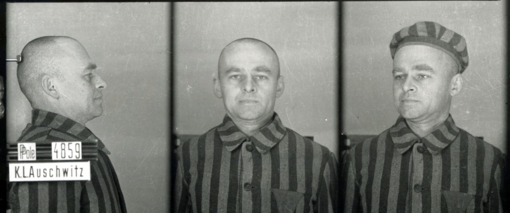
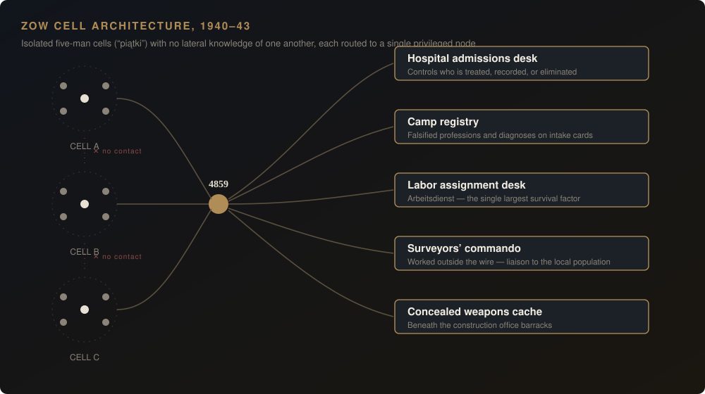
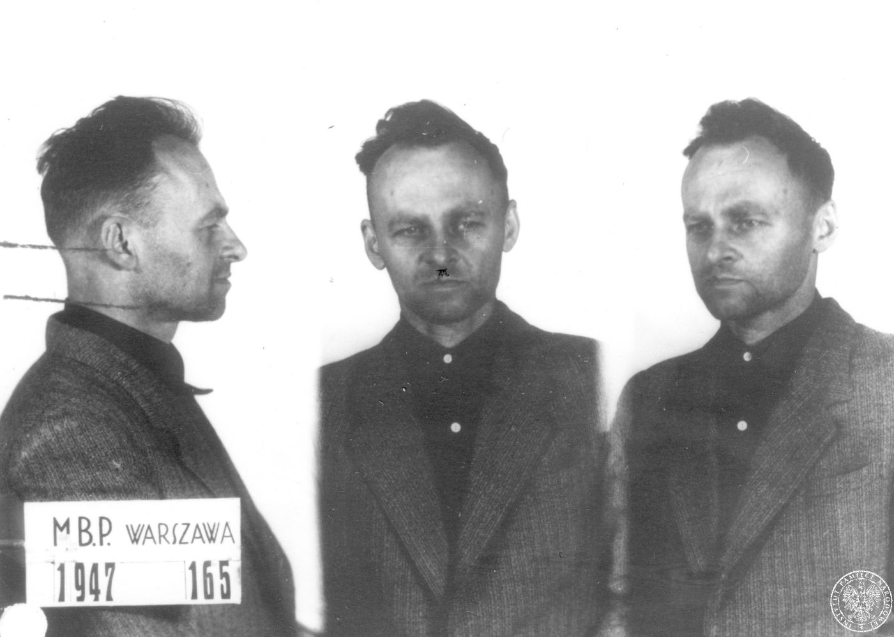

Savvy Security
Prisoner 4859
The man who breached Auschwitz from the inside — and what his tradecraft still teaches us.
Every security professional has run this thought experiment. You cannot see inside the target; perimeter reconnaissance gives you nothing but shape. In September 1940 a 39-year-old Polish cavalry officer named Witold Pilecki got himself arrested on purpose, walked in under a dead man's name, and became prisoner number 4859 at Auschwitz. Over the next 950 days he built a compartmentalized resistance network of several hundred people inside the most surveilled facility in occupied Europe, ran four independent intelligence-exfiltration channels, stood up a covert radio, and extracted cleanly through a hardened door when his network began to show signs of compromise. His own countrymen shot him for it eight years later. This is his story, with the parts security people actually care about left in.
Every security professional has run the thought experiment. You cannot see inside the target. Perimeter reconnaissance gives you nothing but shape. External telemetry is noise. At some point somebody in the room says the thing nobody wants to say: the only way to know what is happening in there is to be in there.
In September 1940, a 39-year-old Polish cavalry officer named Witold Pilecki did exactly that. He walked into a German street round-up in Warsaw carrying documents in a dead man's name, was loaded onto a truck with roughly two thousand other men, and three days later passed under the gate at Oświęcim as prisoner number 4859.
He stayed for nearly 950 days.
In that time he built a compartmentalized clandestine network of several hundred sworn members inside the most heavily surveilled facility in occupied Europe, established four independent exfiltration channels for intelligence, stood up a covert radio transmitter, wrote the first substantial eyewitness reporting on Auschwitz to reach the Western Allies — and then, when his network began to show signs of compromise, executed a clean extraction through a hardened door on a night shift.
His reward was a bullet in the back of the head from his own countrymen eight years later, and forty years of state-enforced silence.
This is his story, told with the parts security people actually care about left in.
I. The insertion
Pilecki was not a professional intelligence officer. He was a landowner from the eastern borderlands, a reserve cavalryman, a farmer who founded a dairy cooperative and a local riding club, and a decent enough painter that he sold work. He fought the Bolsheviks in 1920 and the Wehrmacht in 1939. When his division was destroyed in September 1939, he ignored the order to withdraw through Romania and went underground in Warsaw instead.
On 9 November 1939, in his sister-in-law Eleonora Ostrowska's Żoliborz apartment, Pilecki and Major Jan Włodarkiewicz founded the Secret Polish Army (Tajna Armia Polska, TAP). Pilecki ran organization and mobilization; at various points he was chief of staff, supply chief, and inspector. TAP grew across Warsaw, Siedlce, Lublin, Radom and Kraków. His cover was a sales agent's job with the Raczyński cosmetics wholesaler, which gave him a legitimate reason to move around the city.
Then TAP started losing people.
Through 1940 the Gestapo rolled up cell after cell — initially by accident, then, from September, systematically, after an informant named Borys Pilnik penetrated the intelligence liaison cell and an arrested officer broke under interrogation and gave up names and contact points. Two senior TAP figures, Lt. Col. Władysław Surmacki and Dr Władysław Dering, had already been deported to a new camp at Oświęcim that almost nobody in Warsaw knew anything about.
At a staff meeting in late August 1940, the decision was taken: send an officer inside.
Here is where the popular story and the archival record diverge, and security people should care about the difference.
Pilecki is universally known as "the volunteer for Auschwitz." The historian Ewa Cuber-Strutyńska, writing in the peer-reviewed journal Zagłada Żydów. Studia i Materiały, went back to the primary sources and found the label only partly supported. In Pilecki's own 1945 memoir, Włodarkiewicz tells him his name has already been put forward to the underground commander — the mission is presented as an honour, and as a decision already made. In his 1947 interrogation protocol, Pilecki states plainly that Włodarkiewicz pushed him into it. Michael Fleming, of the Polish University Abroad, reads the same sources and suggests Włodarkiewicz picked Pilecki partly because the two were in conflict over whether TAP should subordinate itself to the main underground command — sending Pilecki into a camp removed an internal rival.
Nor could Pilecki know he was going to Auschwitz specifically. Only one Warsaw transport had gone there before his arrest. The men detained on 19 September were dispatched in three different directions — forced labour in East Prussia, camps in the western Reich, and Auschwitz. He drew Auschwitz on what amounted to a coin flip.
And the celebrated image of him deliberately stepping into the cordon on a street corner appears to be a fabrication — his own. Ostrowska's testimony, corroborated by her son and consistent with Pilecki's later interrogation protocol, has him arrested inside her flat at Wojska Polskiego 40a/7. Her building's caretaker, a sworn TAP soldier, warned him the block was surrounded and offered him several ways out. He refused all of them and would not even hide in the apartment. When the soldier knocked, Pilecki walked out of the back room himself. Dressing to leave, he whispered to her: "Inform the right people that I obeyed the order." In his own written reports he moved the arrest to a street corner — almost certainly to protect her address.
That is not a man being less heroic. That is a man doing counterintelligence hygiene on his own after-action report, at the cost of his own legend. He protected a source in a document he expected to be read by his own side.
The second Warsaw transport, 1,705 prisoners, arrived on the night of 21/22 September 1940. Under the name Tomasz Serafiński — an officer wrongly believed dead — Pilecki became number 4859.

II. Building ZOW: cell architecture under total surveillance
His operating environment was, by design, the most hostile imaginable. Total physical control. Constant observation. A functionary-prisoner layer of German criminals with every incentive to inform. Starvation rations. And a defender who could kill any of his people at any moment without explanation.
Within weeks he began recruiting. The organization became the Związek Organizacji Wojskowej (Military Organization Union, ZOW).
Its architecture is the part worth studying.
Compartmentalization was the founding design principle, not an afterthought. ZOW was built on piątki — "fives." Small units, formed in secret, operating with near-total independence, whose members knew essentially nothing about the existence or composition of other units. The Auschwitz-Birkenau State Museum's account of the network, written by the historian Adam Cyra, states the rationale explicitly: if a unit were uncovered, the interrogation that followed would be bounded to that unit and would yield little about the rest of the organization.
Pilecki personally built the five "top fives" over 1940–41 — the trust roots of the whole structure. The first included Surmacki and Dering, the two TAP men already inside. He recruited slowly and selectively, watching new arrivals for young professional officers who seemed reliable, and had intermediaries administer the oath rather than always doing it himself.
He built for privilege, not for headcount. ZOW's real power came from placing members where the camp's control systems actually ran:
- The prisoners' hospital became the organization's central node. Dering and Dr Rudolf Diem ran the admissions desk, which meant they controlled who got in, who got treated, and who got recorded as what. The hospital was also where camp informants were quietly eliminated.
- The registry. ZOW falsified intake records — swapping intelligentsia professions for working-class ones on new arrivals' cards, and downgrading recorded diagnoses so patients would not be selected for the gas chamber. They were editing the database the killing was executed from.
- The labour assignment desk. The Arbeitsdienst, the functionary who assigned prisoners to work details, was a German criminal-category inmate named Otto Küssel — number 2 in the camp, sympathetic to Poles, and heavily influenced by his ZOW co-worker Mieczysław Januszewski. Work assignment was the single largest determinant of whether a prisoner lived. ZOW had influence over it.
- The surveyors' commando, which worked outside the wire and became the liaison channel to the local population.
- A weapons cache, concealed beneath the construction office barracks.

He solved the trust problem across factional lines. Pre-war Polish politics were bitterly divided. Pilecki refused to run the network on factional grounds and worked deliberately to keep partisan differences out of it — his stated position was that party interests could wait until independence was won. In 1941 he brought socialists and nationalists into the same room; the symbol of that accord was a shared Christmas Eve in 1941 attended by the socialist Stanisław Dubois and the nationalist Jan Mosdorf. Both were later murdered in the camp.
He accepted subordination to preserve the mission. When Lt. Col. Kazimierz Rawicz — a more senior officer operating under a false name — set up a rival network in February 1941, Pilecki did not fight for the top slot. He agreed that Rawicz would take overall command while he continued running ZOW. A merged structure followed. Pilecki's superiors in Warsaw noticed: on 11 November 1941, while he was still inside the camp, the underground commander General Stefan Rowecki promoted him to lieutenant — a break with standing practice, since prisoners were as a rule not promoted.
By its peak the network ran to several hundred sworn members with people in every work detail in the camp, and had extended into the newly built Birkenau under Col. Jan Karcz.
III. Exfiltration: four channels out of a closed system
Building the network was half the mission. Getting product out was the other half, and Pilecki cycled through channels as each one degraded.
Channel 1 — released prisoners (from October 1940). In the camp's early period, some prisoners were still released. Pilecki used them as human couriers carrying memorized or written reports. The first went out in October 1940 with Aleksander Wielopolski, who delivered an oral account to Warsaw. It fed directly into an underground report on occupation terror compiled in January 1941 for the Polish government-in-exile, which reached London on 18 March 1941.
Channel 2 — civilian contractors and locals. As the SS expanded the camp, civilian workers came on site. ZOW recruited them, and the townspeople of Oświęcim, as message carriers. Reports were reaching Warsaw systematically by the end of 1940.
Channel 3 — the radio (from 1942). ZOW conspirators assembled a shortwave transmitter from smuggled and scavenged parts — reportedly seven months of work. It was concealed in the hospital, the one part of the camp SS personnel were reluctant to enter, and it transmitted at varying times of day to frustrate direction-finding. It ran for several months before an indiscreet member made the risk unacceptable and it was dismantled.
Note what that is: covert channel establishment, hostile-network egress, timing randomization to defeat traffic analysis, and a voluntary shutdown on suspicion of compromise. The operator killed his own channel rather than risk the network. Most incident response teams struggle with that decision today.
Channel 4 — engineered escapes (from May 1942). Early on, ZOW forbade escapes: the SS applied collective punishment, starving ten or more prisoners to death in reprisal. When that policy was relaxed, escape became an exfiltration method. The first ZOW-sanctioned escape, on 16 May 1942, carried Wincenty Gawron and Stefan Bielecki out of the Harmense subcamp with instructions from Pilecki to tell Warsaw about the mass killing of Jews and to make London understand what was happening. On 20 June 1942, Stanisław Jaster went out in a stolen SS car as Pilecki's courier, carrying a report proposing a prisoner revolt and stating that ZOW was awaiting orders.
And he encrypted his reporting. The full "Report W," written after his escape, used a substitution key: prisoners' names replaced by numbers, with the code-key held separately. Both the report's first page and the code-key survive in the Auschwitz-Birkenau State Museum archive.
Then the channel died. Toward the end of 1942, the Germans arrested and murdered almost the entire Home Army command for the Oświęcim district — the people who received and forwarded ZOW's product. Because those records were destroyed, historians still cannot fully reconstruct how the reports reached the government delegation. Pilecki's upstream relay was decapitated and he had limited ability to know it.
IV. The intelligence reaches London. Nothing happens.
Pilecki's product made it. In March 1941, information on Auschwitz derived from his early reporting went to London in a secret dispatch from General Rowecki, routed through the "Anna" base in Stockholm. On 3 May 1941, the Polish government in London attached a document on the camp to a note circulated to Allied and neutral states.
From mid-1942, as mass transports of Jews began arriving and were murdered on arrival, the reports changed character. ZOW's reporting began carrying explicit accounts of gassings, mass graves, and casualty estimates — one report from that period gave a figure of roughly 10,000 bodies while flagging that the number was not yet confirmed. It went onward to London via Budapest.
The estimates in Pilecki's later reporting ran high — he wrote of figures exceeding a million and a half by March 1943, where Franciszek Piper's authoritative postwar research established a total Auschwitz death toll of approximately 1.1 million, the overwhelming majority of them Jews. That inflation matters, and it was used against him: some in London treated the numbers as evidence he was exaggerating to force action.
The uncomfortable finding for anyone who believes better telemetry solves problems comes from Michael Fleming's Auschwitz, the Allies and Censorship of the Holocaust (Cambridge University Press, 2014). Fleming tracked forty-five key reports on the extermination of European Jewry from source to destination. His conclusion: the Allies knew far more, far earlier, than the standard account allows — and the dissemination of that knowledge was actively suppressed by British and American propaganda and information agencies. His final chapter argues that the true function of Auschwitz was understood in the West before the famous Vrba-Wetzler report of 1944.
Pilecki's intelligence problem was never collection. It was that his findings landed in an environment that had already decided what it was prepared to do about them.
He was better at collection than almost anyone in history, and it did not save the people he was trying to save.
V. Compromise and extraction
By spring 1943 the indicators were unambiguous.
The camp Gestapo was making progress. Arrests began among Pilecki's closest collaborators. Informants were feeding the political department. And in March and April 1943 the SS transferred more than 7,000 Polish prisoners — the "old numbers," the core of the resistance — to camps inside the Reich, unknowingly gutting the network.
Pilecki confirmed the transfer decision and made the call: extract, in person, and argue the case for an assault on the camp face to face.
Three men — Pilecki, Jan Redzej (no. 5430) and Edward Ciesielski (no. 12969) — got themselves transferred into the bakers' commando, which worked a night shift in a bakery roughly two kilometres outside the wire. Locked in overnight, released back to camp in the morning.
The preparation reads like a checklist:
- A duplicate key manufactured for the bakery's iron door
- Civilian clothing worn concealed beneath camp stripes
- Forged identity papers
- Money
- Powdered tobacco to break the scent trail for tracker dogs
- Cyanide capsules, in case of capture
On the night of 26/27 April 1943 — Easter, when attention was thinner — they went. Under cover of collecting fuel they moved into the wood store, unscrewed the nuts securing the metal door, cut the telephone line and the alarm bell wire, worked the bolts, and opened the door with their key. Then they barricaded it from the outside, sealing the SS guards in behind them, and ran east.
Nine shots were fired after them once the alarm was raised. All missed.
They crossed the Soła, then the Vistula in a boat they found, lay up through the following day, and pushed east on foot into the General Government. Pilecki was wounded in a brush with a German patrol during the trek. Days later they reached Nowy Wiśnicz, near Bochnia.
There, in one of the better coincidences in the history of clandestine work, Pilecki met the real Tomasz Serafiński — the man whose name he had carried for two and a half years, very much alive, and serving as deputy commander of the local Home Army post. They became lifelong friends. Pilecki painted two pictures for him and received two books on the borderlands in exchange.
VI. The answer was no
At Nowy Wiśnicz, Pilecki wrote his first report — eleven typed pages — and buried it on the Serafiński farm. Ludmiła Serafińska kept it even after he later asked her to destroy it, which is why it survives.
He then presented a detailed plan for an armed assault to liberate the camp. The Kraków District command, suspicious that three escapees from Auschwitz might be a German provocation, refused to engage. He went to Warsaw on 22 August 1943 and put the case to Home Army headquarters directly, writing the fuller "Report W" for them.
Headquarters said no, and their reasoning was a risk assessment, not cowardice. The SS garrison at Auschwitz exceeded 3,000, with Wehrmacht units, police and administrative personnel concentrated in the surrounding area. The estimate was that partisan forces might hold the camp open for roughly half an hour, in which time perhaps 200 to 300 prisoners could get out. The rest would have to run for it, which meant they would die. And beyond the assault itself: no capacity to transport, feed, shelter or medically treat thousands of starving people; scarce weapons already committed to a future general uprising; and the certainty of mass German reprisals.
The plan was approved only as a contingency — to be executed if the Germans moved to massacre the prisoners outright. Bór-Komorowski confirmed it in that form.
Pilecki, having heard the arguments, accepted the assessment. He passed the outcome back through the underground channel to his people still inside, then went back to work: financially supporting the families of Auschwitz and Majdanek prisoners from Home Army funds, and maintaining contact with the camp underground — made easier because from January 1944 his fellow escapee Jan Redzej was running the prison-intelligence cell at headquarters.
He was promoted to rotmistrz (cavalry captain) in February 1944, backdated to November 1943, and assigned to NIE — a conspiracy inside the conspiracy, built by Colonel August Fieldorf to survive a coming Soviet occupation.
When the Warsaw Uprising broke out in August 1944, Pilecki was not supposed to fight; NIE personnel were meant to stay dark. He enlisted anyway, as an anonymous private in the Chrobry II grouping, and only revealed his rank when officers were needed. He ended up commanding 2nd Company, I Battalion, holding the Towarowa and Srebrna street sector. Redzej was killed taking the Military Geographical Institute building.
After 63 days the Uprising fell. Pilecki went into captivity on 5 October 1944 — Ożarów, then Lamsdorf, then the officers' camp at Murnau, where he looked after the young insurgents well enough that they called him "Dad."
VII. The second enemy
Freed in 1945, Pilecki joined the Polish 2nd Corps in Italy. At San Giorgio he wrote the long version of his report — over a hundred pages, the document now published in English as The Auschwitz Volunteer: Beyond Bravery.
Then he was ordered back into Poland to run intelligence on the Soviet-installed communist regime, and he went. He crossed the border in October 1945 and reached Warsaw on 8 December under the name Roman Jezierski, and rebuilt his network out of former TAP and ZOW men.
In July 1946 he was told his cover was blown and ordered out. He refused to leave.
He was arrested on 8 May 1947 and held in solitary in Pavilion X of Mokotów prison. The investigation was run by Colonel Roman Romkowski, with interrogators — Łyszkowski, Krawczyński, Kroszel, Słowianek, Chimczak, Alaborski — whom the Institute of National Remembrance describes as notorious for their brutality. It lasted half a year. On 4 November 1947 he signed a statement affirming that his confession had been made freely and voluntarily.
It had not been. The torture is documented by the testimony of his cellmates and of two priests, Jan Stępień and Antoni Czajkowski, held in the same prison. Signing ended the interrogations and bought him the chance to retract at trial.

His Auschwitz comrades appealed to Prime Minister Józef Cyrankiewicz — himself a former Auschwitz prisoner and a member of the camp resistance. Cyrankiewicz did not intervene. Instead he wrote to the presiding judge, urging that the wartime activity of "Tomasz Serafiński" be disregarded and that Pilecki be treated as an enemy of the people.
The trial opened on 3 March 1948 at the Warsaw district court on Nowogrodzka Street. It was nominally public; admission was by ticket, issued to family and ministry officials. Presiding judge: Lt. Col. Jan Hryckowian — a former Home Army officer. Prosecutor: Major Czesław Łapiński — also a former Home Army officer. The composition of the bench violated Polish law as it then stood.
The charges: possession of weapons; preparation of armed assassinations against government figures; use of false identity documents. The prosecutor called none of his own witnesses, most of whom were themselves in prison, and permitted no witnesses for the defence.
Pilecki admitted passing information to the 2nd Corps, arguing that as an officer of that formation he had broken no law. He denied the assassination charge and denied espionage. He refused to implicate his comrades.
He told his wife, during a brief courtroom exchange, that measured against what the secret police had done to him, Auschwitz had been child's play.
On 15 March 1948 he was sentenced to death, together with Maria Szelągowska and Tadeusz Płużański. The court's stated justification was that they had committed the gravest treason, betrayed the nation, and sold themselves to a foreign intelligence service. Szelągowska's sentence was later commuted on account of her sex; Płużański's in time as well. The final clemency petition to President Bolesław Bierut — filed by Pilecki's lawyer, by his wife Maria, and by his friends from Auschwitz — was refused.
At 9:30 p.m. on 25 May 1948, in the presence of a deputy military prosecutor, the prison warden, a doctor and a priest, Witold Pilecki was shot in the back of the head by Staff Sergeant Piotr Śmietański, known to inmates as the executioner of Mokotów.
He was buried in secret, most likely at the Łączka — "the Meadow" — a strip of ground beside the wall of the Powązki military cemetery in Warsaw where the regime disposed of the people it wanted forgotten.
His remains have never been found. The Institute of National Remembrance is still searching.
VIII. Erasure, and after
For over forty years, Pilecki did not officially exist. Every element of his record was censored in communist Poland. His children were barred from higher education.
- September 1990 — the Supreme Court quashed the verdict, acquitted Pilecki and his co-defendants, and formally recognized their conduct as patriotic.
- 2000 — Adam Cyra reconstructed and published the report for the first time, 55 years after it was written.
- 30 July 2006 — posthumously awarded the Order of the White Eagle, Poland's highest honour.
- 6 September 2013 — posthumously promoted to colonel.
- 2012 — the 1945 report published in English as The Auschwitz Volunteer: Beyond Bravery, with an introduction by Norman Davies. Timothy Snyder called it a historical document of the greatest importance.
His daughter, Zofia Pilecka-Optułowicz, has spent decades lighting a candle at the Mokotów prison wall at 9:30 p.m. each 25 May.
IX. Where the legend needs correcting
A note on intellectual honesty, because this audience will check.
Cuber-Strutyńska's 2017 article is the most rigorous source-critical treatment of Pilecki available, and she pushes back on two claims that are repeated everywhere, including in most of what you will find on a first page of search results:
1. "Volunteer for Auschwitz." The sources — including Pilecki's own — indicate the mission was assigned by his superior rather than initiated by him, and that he could not have known which camp he would end up in. She is explicit that this does not diminish his heroism; it means the word "volunteer" is being used loosely.
2. "The first report on the Holocaust." Report W is primarily an operational account of the camp underground and of Pilecki's own experience. Mass murder of Jews appears in it, and by 1942–43 ZOW's reporting on gassings was substantial and specific — but Polish underground reporting on the fate of Jews existed from 1940 onwards, and Report W does not centre on it.
Both corrections are worth carrying, and neither touches the operational record, which is what makes him extraordinary. He was not a saint constructed by a state memory institute. He was a man who did an appallingly difficult job well, for years, and then died badly for it.
X. Seven things worth taking away
1. The only way to understand some systems is from inside them. Perimeter analysis of Auschwitz would have produced nothing but a fence line and a rumour. Every meaningful fact came from an operator with an internal position.
2. Compartmentalize before you are compromised, not after. The piątki were designed in 1940 for a breach that came in 1943. When it came, the Gestapo took the leadership — 54 people shot at the Death Wall on 11 October 1943, including Juliusz Gilewicz and most of the command layer — and the organization survived. It continued under Bernard Świerczyna, Stanisław Kazuba and Henryk Bartosiewicz.
3. Privileged access beats headcount. ZOW's leverage came from the hospital admissions desk, the labour assignment office, and the registry — the three systems that determined survival. Positioning trumped numbers.
4. Diversify your egress and expect channels to die. Released prisoners, then civilian contractors, then radio, then engineered escapes. Each degraded and each was replaced. The relay in Oświęcim was decapitated at the end of 1942 and the network barely knew.
5. Kill your own channel when it looks burned. The transmitter was working. One member was talking too much. They took it down. That decision is harder than building the thing was.
6. Your report has to survive being read by the wrong people. Report W used numbers instead of names with a separately held key. Pilecki misreported the location of his own arrest to protect a source. His threat model included his own side's document security.
7. Perfect intelligence does not produce action. This is the one that should sting. Pilecki delivered accurate, timely, corroborated, first-hand reporting to the highest levels of two governments, and the decisions he wanted were not taken — some for defensible reasons of capability, some because the receiving organizations had already decided how much they wanted to know. Fleming's research indicates the West knew more and earlier than the standard account allows, and that the knowledge was deliberately not amplified.
Prisoner 4859 got inside. He built the network. He held it for two and a half years. He got the intelligence out, four different ways. He extracted cleanly under compromise. He wrote it all down.
And then the people he came home to shot him, buried him where nobody would find him, and spent forty years pretending he had never existed.
We still do not know where he is.
Sources
Primary and archival
- Witold Pilecki, Report W: KL Auschwitz 1940–1943. Institute of National Remembrance / Pilecki Project Committee, Warsaw 2017; trans. Eva Hussain. ISBN 978-83-8098-438. eng.ipn.gov.pl
- Witold Pilecki, The Auschwitz Volunteer: Beyond Bravery, trans. Jarek Garliński, intro. Norman Davies, foreword Michael Schudrich. Aquila Polonica, 2012. ISBN 9781607720096.
- Archive of the Auschwitz-Birkenau State Museum (APMA-B), Wspomnienia vols. 130, 179, 183 — Pilecki's 1943 and 1945 reports, "Report W" and its code-key, and Eleonora Ostrowska's testimony.
Scholarly
- Ewa Cuber-Strutyńska, "Witold Pilecki. Confronting the legend of the 'volunteer to Auschwitz'," Zagłada Żydów. Studia i Materiały (2017), pp. 281–301. DOI: 10.32927/zzsim.720. Full text: zagladazydow.pl
- Michael Fleming, Auschwitz, the Allies and Censorship of the Holocaust. Cambridge University Press, 2014. ISBN 9781107062795. Reviewed by Antero Holmila, The American Historical Review 121:3 (June 2016), pp. 1039–1040. DOI: 10.1093/ahr/121.3.1039
- Józef Garliński, Fighting Auschwitz: The Resistance Movement in the Concentration Camp. London, 1974.
- Adam Cyra, Ochotnik do Auschwitz. Witold Pilecki 1901–1948. Oświęcim, 2000 — the first publication of the reconstructed report.
- Wiesław Jan Wysocki, Rotmistrz Witold Pilecki 1901–1948. Warsaw, 2009.
- Franciszek Piper, Ilu ludzi zginęło w KL Auschwitz [How Many Perished at Auschwitz]. Auschwitz-Birkenau State Museum, 1992 — the standard casualty study.
- Kazimierz Malinowski, Tajna Armia Polska–Znak–Konfederacja Zbrojna. Warsaw: PAX, 1986.
- Martin Gilbert, Auschwitz and the Allies. London: Michael Joseph, 2001.
Institutional
- Adam Cyra, "Polish Military Resistance Movement at Auschwitz," Auschwitz-Birkenau State Museum online exhibit. artsandculture.google.com
- Institute of National Remembrance (IPN), biographical dossier on Captain Witold Pilecki. biogramy.ipn.gov.pl
- Auschwitz-Birkenau State Museum, "Repressions against OW members" and "Escape on 27 April 1943," online lesson materials. lekcja.auschwitz.org
- Polish Press Agency (PAP), anniversary reporting on the escape and the execution. pap.pl
Historical detail in this article is drawn from the archival and peer-reviewed sources listed above; where the popular account and the archival record diverge, the archival record is followed and the divergence is noted directly in the text (Section IX). Photographs are official intake and booking records held by the Auschwitz-Birkenau State Museum and the Institute of National Remembrance, both in the public domain, sourced via Wikimedia Commons.